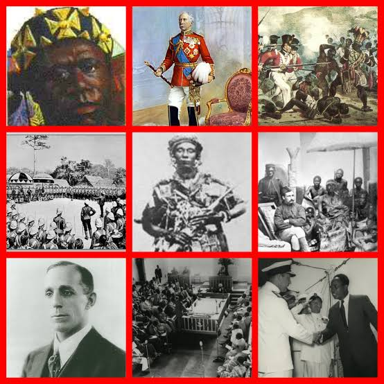
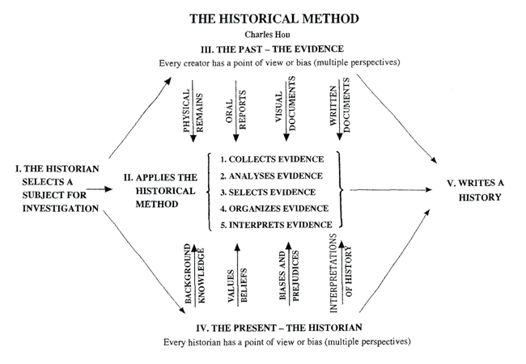
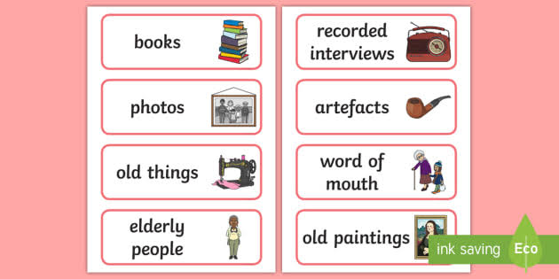
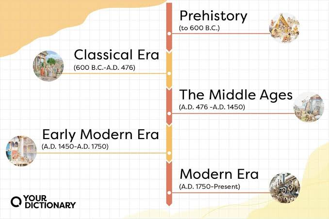
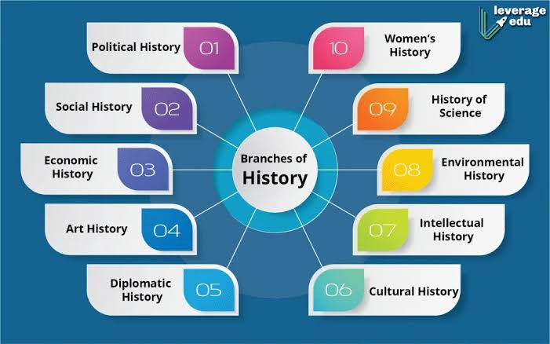
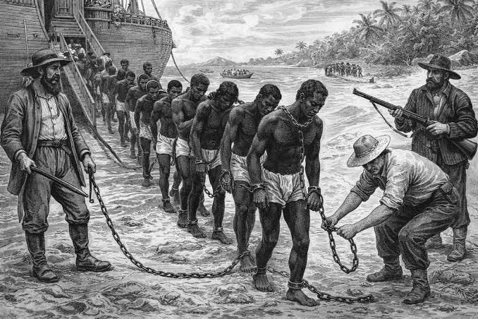

History teaches us how people, ideas, and events shape the present, helping students think critically, understand continuity and change, and make wiser choices for the future.
History is the study of past events, peoples, societies, and cultures. It asks questions about how and why things happened and explores the impact of decisions and actions over time. By examining history, students learn to appreciate the complexity of human experience and the importance of context in understanding events.
Studying history involves reading narratives, analyzing evidence, comparing interpretations, and connecting events across time. It gives students the tools to understand social change, political developments, economic systems, and cultural identities from different periods and regions.
History is not only a record of the past but also a conversation between the past and the present.
History is both a science and an art. It uses systematic research methods to collect evidence from the past, and it uses storytelling to explain and interpret that evidence. Historians must be careful, critical, and creative when reconstructing the past from incomplete or biased sources.
History as a discipline involves questions about causation, continuity, context, and significance. Historians analyze social structures, political systems, and cultural beliefs to understand why events occurred and how they influenced later generations.
A good historian listens to the past, evaluates evidence, and tells the story responsibly.
Historical methods are the techniques historians use to study the past. These include sourcing, contextualization, corroboration, and close reading of texts and artifacts. Historians develop research questions, gather evidence, and evaluate the reliability of documents and testimonies.

Historians compare different accounts of the same event to identify agreements and differences. They also place evidence within its social, political, and cultural context to avoid misunderstanding what people said and did in the past.
Historical methods turn fragments of the past into meaningful stories that can be examined and debated.
History relies on sources of information from the past. Primary sources are documents or artifacts created during the time being studied, such as letters, official records, photographs, maps, and oral testimonies. Secondary sources are interpretations made by later historians, such as textbooks, articles, and documentaries.

Historians evaluate a source's origin, purpose, audience, and perspective. They ask whether a document is complete, whether the author was biased, and whether the information can be confirmed by other sources. This careful evaluation helps historians build more accurate accounts of the past.
Reliable history depends on close attention to the evidence and an honest assessment of its strengths and weaknesses.
Chronology is the ordering of events by time. Historians divide the past into periods such as ancient, medieval, early modern, and modern history. Chronological awareness helps students understand how events connect and how societies change over long spans of time.

Students learn to place events on timelines, calculate durations, and compare developments in different regions at the same time. This helps them see both parallel changes and unique paths in world history.
Time is the frame on which the story of history is hung, making chronology essential to understanding change.
History can be studied through themes such as political history, economic history, social history, cultural history, and intellectual history. Thematic study helps students explore specific aspects of the past in depth, such as revolutions, trade, migration, religion, or technology.

Thematic history also allows comparisons across regions and eras. For example, economic historians might study trade routes in both Africa and Asia, while political historians could examine how new governments form after independence movements.
Different themes reveal different facets of the past, making history richer and more complete.
African history highlights the continent's varied civilizations, kingdoms, trade networks, and colonial experiences. Ghanaian history includes ancient societies such as the Akan and Ga, the powerful Asante Empire, the Trans-Saharan trade, British colonial rule, and independence under Kwame Nkrumah in 1957.

Students study local history through monuments, oral tradition, and written documents. This includes the role of chiefs, the slave trade, the Gold Coast colonial period, the independence movement, and post-independence development. Local history connects students directly to the land and people of Ghana.
Ghanaian history is a story of resilience, leadership, and the struggle to shape a nation from diverse traditions.
History explores causes and effects to explain why events happen and what follows from them. Causes can be immediate, long-term, economic, political, social, or cultural. Effects can be local or global, intended or unintended.
For example, the cause of a reform movement may be unfair laws, while the effect may be a new constitution or increased social tension. Historians compare multiple causes to avoid oversimplifying events and trace the consequences that shape later developments.
Understanding causes and effects helps historians explain not only what happened, but why it mattered.
History is not a single unchanging story. Different historians interpret the same evidence in different ways based on their questions, values, and perspectives. Awareness of bias is essential because sources and historians may reflect political interests, cultural assumptions, or personal opinions.
Students learn to ask who created a source, why it was created, and whose voices are missing. They also learn that good historical interpretation uses evidence carefully and acknowledges uncertainty when sources are incomplete or conflicting.
Historians must recognize bias, question assumptions, and compare perspectives to build more balanced accounts of the past.